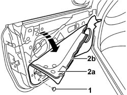

7005A04 FRONT SIDE DOOR WATER GUARD PROTECTION - R R OR REPLACE WITH DOOR PANEL REMOVED
- Path
- Procedures > 70 FITTINGS > 7005 PASSENGER COMPARTMENT FRONT SIDE DOORS > 7005A LOCATION OF FRONT DOOR WIND NOISES > 7005A04 FRONT SIDE DOOR WATER GUARD PROTECTION - R R OR REPLACE WITH DOOR PANEL REMOVED
- Kind
- repair procedure (removal / refitting; the operation number is the code)
- Applies to
- all engines; all production periods
- Interactive page
- https://sloeber94.github.io/elrnDB-aGt/en/#/125001756
Applies to: all engines; all production periods
 Removing
Removing
 Refitting
RefittingOp. 5570T90 FRONT SPEAKER - R R
Op. 7005M40 FRONT ELECTRIC WINDOW SYSTEM ECU - R+R FOLLOWING ELECTRICAL WIRING CHECK
1. Disengage the retainers using the special tool.
 | Name | Country |
|---|---|---|
- | Scraper blade | 1.823.015.000 |
2. Remove the protective water shield (2a) detaching the adhesive (2b).

Applies to: all engines; all production periods
Refitting
RemovingCheck that the new seal is intact and not torn.
Fit the new door seal.
Engage the retainers.
Op. 5570T90 FRONT SPEAKER - R R
Op. 7005M40 FRONT ELECTRIC WINDOW SYSTEM ECU - R+R FOLLOWING ELECTRICAL WIRING CHECK
Topics linked from this page (2)
- 5570T90 FRONT SPEAKER - R R
- 7005M40 FRONT ELECTRIC WINDOW SYSTEM ECU - R+R FOLLOWING ELECTRICAL WIRING CHECK
Topics that link to this page (15)
- 5505B11 FRONT DOOR WIRING - R R
- 7005A05 FRONT SIDE DOOR WATER GUARD PROTECTION R R OR ARRANGE
- 7005C10 FRONT DOOR OUTER HANDLE - R R WITH DOOR PANEL REMOVED
- 7005C11 FRONT SIDE DOOR OUTSIDE HANDLE R R
- 7005C15 FRONT SIDE DOOR LOCK BARREL (IN HANDLE) - R+R
- 7005C42 FRONT SIDE DOOR BARREL/LOCK CONNECTING LINKAGE - R R WITH DOOR PANEL REMOVED
- 7005C43 LINK CONNECTING FRONT SIDE DOOR BARRELS/CATCH - R+R
- 7005C54 FRONT SIDE DOOR INTERNAL OPENING RETURN MECHANISM (WITH HANDLE) - R R FOR REPAIR OR REPLACE WITH DIFFERENT VERSION
- 7005C55 FRONT SIDE DOOR INTERIOR OPENING RETURN DEVICE (WITH HANDLE) - R+R FOR REPAIR OR REPLACEMENT
- 7005E91 PARTITION ON ONE FRONT DOOR (LH OR RH) - R R WITH DOOR PANEL REMOVED
- 7005M20 FRONT SIDE DOOR ELECTRIC WINDOW SYSTEM - R R WITH DOOR PANEL/SUPPORT FRAME REMOVED
- 7005M21 FRONT SIDE DOOR ELECTRICALLY OPERATED WINDOW - R R
- 7005N20 FRONT SIDE DOOR LOCK MOTOR/CATCH ASSEMBLY - RR WITH DOOR PANEL AND SUPPORT FRAME REMOVED
- 7005N21 FRONT SIDE DOOR LOCK MOTOR-LOCK ASSEMBLEY-R R
- 7205E36 STRIPPING FRONT SIDE DOOR